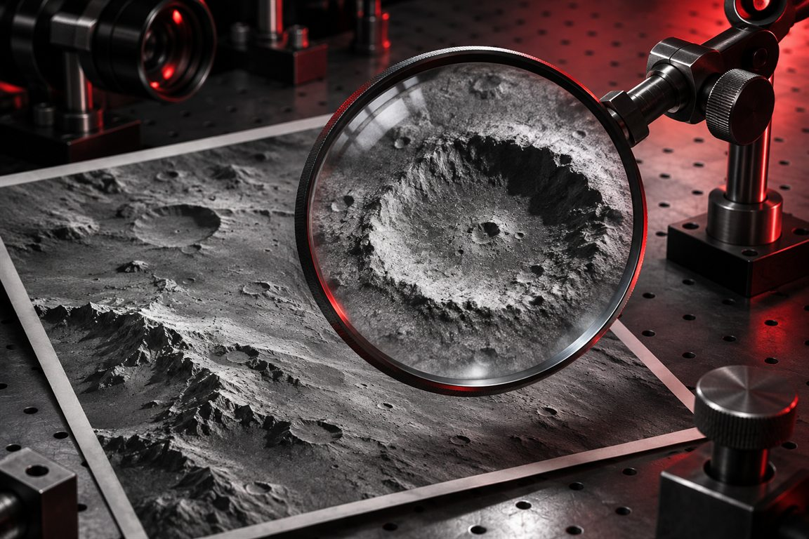

Mars X Files: Anomalies vs Official Readings
Compare planetary data, unusual-looking features and Martian folklore in a single reference chart. Use it to move from a claim or image to the relevant scientific reading.

On this page
Summary
Framework node to read Mars within X Files without mixing three different layers: real planetary data, visual anomalies, speculative lore. The idea is not to kill the Martian imaginary, but to organize it to distinguish which part belongs to geology and climatology, which part belongs to observation error and which part belongs to cultural mythology.
What does it actually contain?
- a read rule to separate
past habitabilityfromlost civilization - the bridge between Cydonia: Martian Mystery Region, Face on Mars: Official Image Reanalysis and CIA Mars Exploration 1984
- a simple framework to classify claims about Mars into
strong,debatedandspeculative - an operational table to contrast the X Files narrative with the official/scientific reading
Why it matters within X Files
- Mars concentrates a rare mix of hard science, ambiguous images and folklore of ancient civilizations
- It is one of the best cases to study how a visual anomaly becomes a lasting myth
- allows linking package
NASA / geology / ancient waterwith packageCIA / Stargate / remote viewing - prevents the wiki from being binary between
todo era una rocaandtodo era una ruina extraterrestre
The 3 layers that should always be separated
1) Strong planetary layer
Here comes what is reasonably well supported by the official sources kept:
- Ancient Mars had different conditions than today
- there was surface or sub-surface water in different periods
- atmospheric and climatic loss radically changed habitability
- Regions like Cydonia are studied as complex geological landscapes, not architecture
2) Visual anomaly layer
Here come the cases where an image or feature of the terrain triggers artificial readings:
- Face on Mars
- rectangular or radial patterns seen with poor resolution
- shadows, angles and relief that favor pareidolia
- human readings that seem solid until the data improves
3) Mythological/speculative layer
Here comes the material of high cultural value but low empirical validation:
- ancient martian civilizations
- megalithic ruins in Cydonia
- remote viewing readings as CIA Mars Exploration 1984
- narratives of exodus, global catastrophe and buried monumental architecture
Mars package core question
The useful question is not Was Mars inhabited by an advanced civilization?, because the sources in this package do not allow for a strong answer to that. The useful question is:
How does solid scientific data about a wetter ancient Mars coexist in the same topic with visual and narrative interpretations that scalete towards ruins, faces and disappeared civilizations?
Operating chart: claim vs official reading
| Claim / reason | Signal that feeds it | Official/strong reading | Useful status |
|---|---|---|---|
ancient Mars fue muy distinto al actual | geology, climate, water, past habitability | broadly consistent with NASA and recent planetary literature | strong |
Cydonia is a strange and special region | transitional relief, mesas, craters, shallow ice, cultural history of the Face | Yes, it is a geologically interesting region; that does not make it artificial | strong with cultural drift |
The Face looks like a sculpture | Viking images with low resolution and favorable shading | high resolution + different lighting strongly reduce anthropomorphic reading | weak as material evidence |
Formas cuadradas o radiales son ruinas | partial patterns, edges, reflections, angles | Without topographic and geomorphological context this is nothing more than visual suspicion | speculative |
Canals and routes indicate engineering | human analogy to apparent furrows, valleys or channels | are often reinterpreted as geological features or reading artifacts | weak / debated depending on the case |
There was a lost Martian civilization | sum of anomalies + narrative desire + remote viewing | no strong empirical support appears in these sources | speculative |
The CIA recorded information about ancient Mars | Stargate declassified document | yes, as a historical document of the program; not as content validation | documentary authentic, empirically weak |
How the Martian imaginary is built
Step 1: An eye-catching shape appears
A low-resolution image, a shadow or a singular relief seems to suggest a familiar figure: face, pyramid, wall, avenue.
Step 2: The human mind completes the pattern
Human perception fills in gaps. The brain prefers a familiar shape over an ambiguous surface. Mars, due to its distance and low historical image quality, was a perfect terrain for this.
Step 3: The anomaly becomes history
The form stops being just an image and begins to have a story:
someone built itit is too symmetricalthere are other structures nearbythey are hiding the truth
Step 4: enter secondary documentary material
Documentaries, blogs, books, or even authentic but methodologically weak pieces like Stargate add narrative texture. They don't prove the claim, but they do make it memorable.
Rule of thumb for reading any Martian note
If the note talks about water, climate, ice, atmosphere or past habitability
Treat it as potentially strong planetary science.
If the note depends on a way that parece something human
Treat it first as a problem of perception and resolution.
If the note jumps from form to the story of civilization
Ask for additional material evidence: geological context, multiple images, topography, papers, measurements and not just visual analogy.
Yes, the note comes from the CIA / Stargate / psi ecosystem
Always separate:
1. documentary authenticity
2. historical context
3. empirical content validity
Critical reading
What this package does demonstrate
- that Mars was scientifically more interesting and potentially more habitable in the past than previously thought
- that Cydonia and Face are classic cases of reinterpretation by data improvement
- that Martian folklore was not born out of nowhere: it is supported by real images, real historical observations and real rare documents
What it does not prove
- that there is strong evidence of ancient Martian architecture
- that visual anomalies equal intelligent design
- that the CIA/Stargate documentation validates the existence of beings or ruins on Mars
Useful interpretation
Mars' greatest value in the X Files is in the friction between two partial truths:
- the strong scientific version: ancient Mars was more complex, humid and potentially habitable
- the strong imaginary version: this complex past invites us to project ruins, survivors, exoduses and civilizations
The wiki should preserve both layers, but without confusing them.
logical expansion queue
- Martian catalog
claim / source / counter-reading / status - specific note about
pyramids and apparent geometries on Mars - more explicit connection between Cydonia: Martian Mystery Region and Face as a story of Martian pareidolia
- future bridge with alternative terrestrial archeology from Ancient Civilizations and Alternative Chronology
Related
Mars X Files Map Cydonia: Martian Mystery Region Face on Mars: Official Image Reanalysis Ancient Water on Mars and Climate Loss Ancient Ocean on Mars: Evidence vs Open Debate CIA Mars Exploration 1984 Research map Archive home